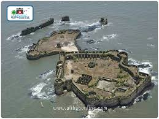
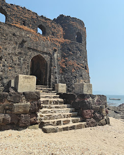
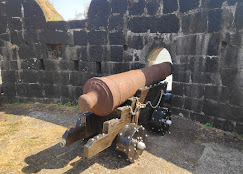
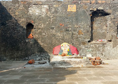
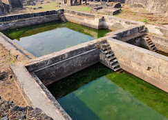

पद्मदुर्ग किल्ला
Location : Click Here For Google Map
- माहिती
- पद्मदुर्ग किल्ला महाराष्ट्र राज्याच्या रत्नागिरी जिल्ह्यात स्थित एक ऐतिहासिक किल्ला आहे. हा किल्ला अरबी समुद्राच्या किनाऱ्यावर वसलेला आहे आणि समुद्रावर होणाऱ्या हल्ल्यांसाठी एक महत्त्वपूर्ण संरक्षण किल्ला मानला जातो. किल्ल्याची बांधणी १७ व्या शतकात झाली होती, आणि तो छत्रपती शिवाजी महाराजांच्या काळातील महत्त्वपूर्ण किल्ला होता.
किल्ल्याच्या भिंती, कडेकडे, आणि प्रवेशद्वारांची संरचना ही किल्ल्याच्या रक्षणासाठी अत्यंत उपयुक्त होती. समुद्राच्या जवळ असलेल्या या किल्ल्याच्या शिखरावरून एक अद्भुत दृश्य दिसते. किल्ल्याच्या कड्यांवर स्थित असलेल्या इमारती आणि संरचना आजही जिवंत आहेत.
पद्मदुर्ग किल्ला त्याच्या सामरिक महत्त्वासाठी ओळखला जातो, कारण तो समुद्रमार्गे होणाऱ्या हल्ल्यांपासून सुरक्षेत ठेवणारा किल्ला होता. या किल्ल्याचा ऐतिहासिक महत्त्व आजही पर्यटकांना आकर्षित करत आहे, ज्यांना किल्ल्याच्या स्थापत्यशास्त्र आणि समुद्रकाठील सौंदर्याची अनुभूती घेण्याची संधी मिळते.
आजकाल, पद्मदुर्ग किल्ला एक प्रमुख पर्यटन स्थळ आहे, जिथे पर्यटक किल्ल्याची सुंदरता, स्थापत्य आणि ऐतिहासिक महत्त्व अनुभवण्यासाठी येतात.
Explore the historical beauty




